Guia V13 • Fábio Silva • Ambiente: Grafana do professor (endereço informado em aula), fonte Loki, serviço de e-commerce. Grafana 11.3 · Loki 3.3.
Cada exercício tem a forma certa e o erro comum que vale a pena provocar de propósito. Execute os dois, compare o resultado e registre a explicação. Todas as consultas e mensagens abaixo foram executadas no ambiente do professor em 22/10/2026.
Dica: no Explore, escolha Loki, mude o editor para Code, cole a consulta e pressione Shift+Enter. Use o período indicado em cada exercício.
| Exercício | Tema | Período |
|---|---|---|
| 3.4 — Selecionar o serviço certo | Seletor de stream | Last 15 minutes |
| 3.5 — Erros pelo label, não pelo texto | Label x filtro de linha | Last 15 minutes |
| 3.6 — Buscar texto ignorando maiúsculas | Filtro de linha com regex | Last 15 minutes |
| 3.7 — Abrir o JSON dentro do JSON | Parser json + line_format | Last 15 minutes |
| 3.8 — Filtrar por status numérico | Filtro de label após parser | Last 15 minutes |
| 3.9 — Contar logs por nível | Consulta de métrica | Last 1 hour |
| 3.10 — Ranking das rotas com falha | Agregação + topk | Last 1 hour |
Tema: Seletor de stream • Período: Last 15 minutes
Abra Explore, escolha a fonte Loki e mude o editor para Code.
Clique em Label browser, escolha o label service e o valor ecommerce-shop.
Confira a consulta montada, execute com Shift+Enter e observe Logs volume.
Repita digitando o valor sem aspas e leia a mensagem de erro.
✔ Forma certa
{service="ecommerce-shop"}
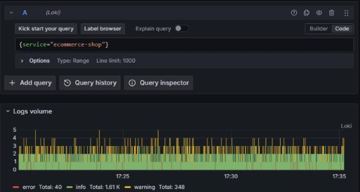
✘ Erro comum
{service=ecommerce-shop}
Sintoma: parse error at line 1, col 10: syntax error: unexpected IDENTIFIER, expecting STRING
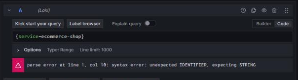
Por quê: Valores de label são strings e precisam de aspas duplas. Um seletor vazio ({} ou service=~".*") também é recusado: o Loki exige ao menos um matcher que não aceite vazio.
Resultado esperado: Linhas do e-commerce com os níveis INFO, WARNING e ERROR no histograma.
Registre: Quantos níveis aparecem no Logs volume? Qual a mensagem de erro do seletor sem aspas?
Tema: Label x filtro de linha • Período: Last 15 minutes
Acrescente level="ERROR" ao seletor do exercício anterior.
Execute e confirme que o histograma ficou só com a cor de erro.
Agora troque por {service="ecommerce-shop"} |= "error" e execute.
Compare: por que a segunda consulta não traz nada?
✔ Forma certa
{service="ecommerce-shop", level="ERROR"}
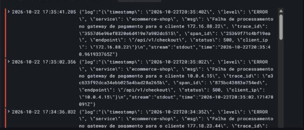
✘ Erro comum
{service="ecommerce-shop"} |= "error"
Sintoma: No data: 0 linhas (o texto do log usa ERROR em maiúsculas)
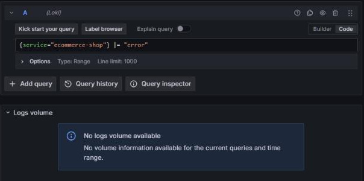
Por quê: |= diferencia maiúsculas de minúsculas. Este serviço registra ERROR. Quando o nível já é label, filtrar no seletor é mais rápido e não depende do texto.
Resultado esperado: Somente linhas de erro, quase todas de falha no gateway de pagamento.
Registre: Anote o horário e a mensagem de duas linhas de erro.
Tema: Filtro de linha com regex • Período: Last 15 minutes
Volte para {service="ecommerce-shop"}, sem o label level.
Acrescente |~ "(?i)gateway de pagamento" e execute.
Teste a variação |= "Gateway" e compare a quantidade de linhas.
Opcional: exclua um cliente com != "10.0.4.15" depois do filtro.
✔ Forma certa
{service="ecommerce-shop"} |~ "(?i)gateway de pagamento"
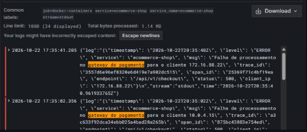
✘ Erro comum
{service="ecommerce-shop"} |= "Gateway"
Sintoma: No data: 0 linhas (no log a palavra é "gateway", minúscula)
Por quê: (?i) dentro da regex liga a comparação sem diferenciar maiúsculas. |= procura o texto exatamente como foi digitado.
Resultado esperado: Linhas ERROR com "Falha de processamento no gateway de pagamento".
Registre: Qual dos dois filtros é mais seguro quando você não conhece o texto exato? Por quê?
Tema: Parser json + line_format • Período: Last 15 minutes
Abra uma linha e veja o envelope do Docker: {"log": "{...}", "stream": ..., "time": ...}.
Digite a consulta certa: json, line_format "{{.log}}" e json de novo.
Execute e confira que cada linha mostra nível, rota e mensagem.
Teste a versão com um único | json e veja as linhas quase vazias.
✔ Forma certa
{service="ecommerce-shop"} | json | line_format "{{.log}}" | json | line_format "{{.level_extracted}} {{.endpoint}} {{.msg}}"
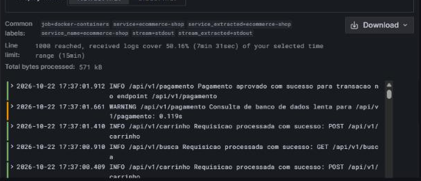
✘ Erro comum
{service="ecommerce-shop"} | json | line_format "{{.level}} {{.endpoint}} {{.msg}}"
Sintoma: Linhas como "INFO ": endpoint e msg vazios
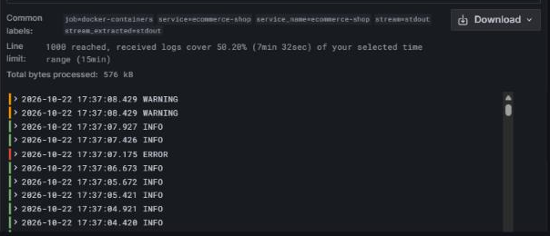
Por quê: O primeiro json só enxerga log, stream e time. É preciso trocar a linha pelo conteúdo de log e aplicar json outra vez para chegar em msg, endpoint e status. Como level já é label, o campo extraído vira level_extracted.
Resultado esperado: Linhas legíveis: ERROR /api/v1/checkout Falha de processamento no gateway...
Registre: Expanda uma linha e liste quatro campos extraídos.
Tema: Filtro de label após parser • Período: Last 15 minutes
Parta da consulta do 3.7 e troque o último line_format por | status >= 500.
Execute e confira que só restam respostas 500.
Teste o filtro sem parser: {service="ecommerce-shop"} | status >= 500.
Teste também status >= "500" com aspas e leia o erro.
✔ Forma certa
{service="ecommerce-shop"} | json | line_format "{{.log}}" | json | status >= 500
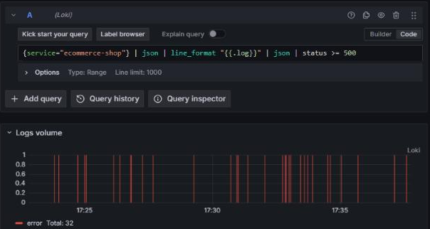
✘ Erro comum
{service="ecommerce-shop"} | status >= 500
Sintoma: No data: status ainda não existe sem o parser. Com "500" entre aspas: syntax error: unexpected STRING
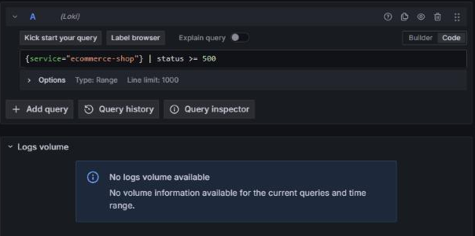
Por quê: Filtros de label só enxergam campos que já foram extraídos. Números são comparados sem aspas.
Resultado esperado: Somente linhas com status 500 nas rotas de checkout e pagamento.
Registre: Quais rotas aparecem com status 500?
Tema: Consulta de métrica • Período: Last 1 hour
Escreva sum by (level) (count_over_time({service="ecommerce-shop"}[5m])).
Execute com Last 1 hour e observe as três séries no gráfico.
Remova [5m] e leia a mensagem de erro.
Troque count_over_time por rate e compare a unidade.
✔ Forma certa
sum by (level) (count_over_time({service="ecommerce-shop"}[5m]))
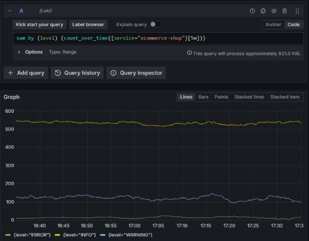
✘ Erro comum
count_over_time({service="ecommerce-shop"})
Sintoma: parse error: syntax error: unexpected )
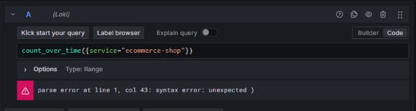
Por quê: Funções de range precisam da janela entre colchetes. count_over_time conta linhas na janela; rate divide pelos segundos da janela.
Resultado esperado: Três séries: INFO (maior), WARNING e ERROR.
Registre: Quantas linhas ERROR em 5 minutos no ponto mais alto?
Tema: Agregação + topk • Período: Last 1 hour
Escreva a consulta certa com parser dentro de count_over_time e status >= 400.
Execute e identifique as três rotas com mais respostas de falha.
Remova o parser e o filtro de status e execute de novo.
Compare: por que a versão sem parser devolve uma única série sem nome?
✔ Forma certa
topk(3, sum by (endpoint) (count_over_time({service="ecommerce-shop"} | json | line_format "{{.log}}" | json | status >= 400 [15m])))
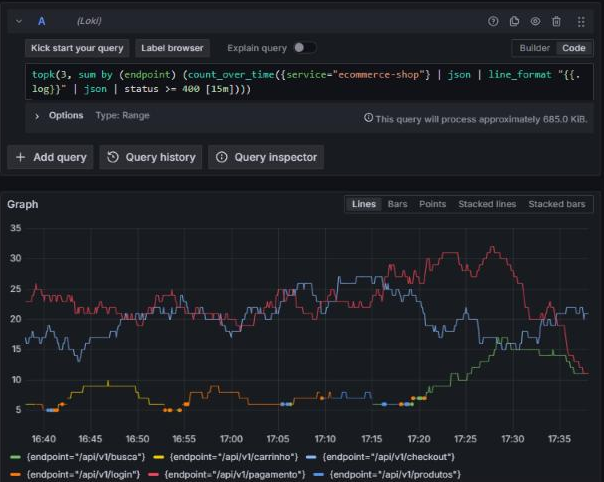
✘ Erro comum
topk(3, sum by (endpoint) (count_over_time({service="ecommerce-shop"} [15m])))
Sintoma: Uma única série {}: o label endpoint não existe sem o parser
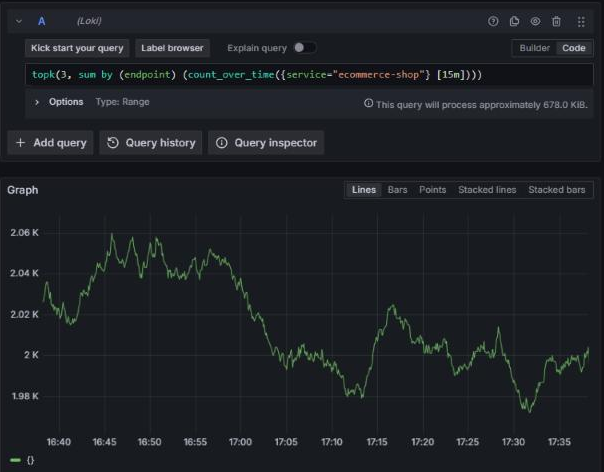
Por quê: Para agrupar por um campo de dentro do JSON, o parser precisa estar na consulta interna, antes da janela.
Resultado esperado: Séries por rota com status >= 400. topk escolhe as 3 maiores em cada ponto, por isso mais nomes podem aparecer na legenda ao longo de 1 hora.
Registre: Qual rota lidera? A falha é 404 (não encontrado) ou 500 (erro do servidor)?
{service="ecommerce-shop"} # seletor
{service="ecommerce-shop", level="ERROR"} # label de nível
|= "texto" != "texto" |~ "(?i)regex" # filtros de linha
| json | line_format "{{.log}}" | json # JSON dentro do envelope Docker
| status >= 500 # filtro numérico (sem aspas)
sum by (level) (count_over_time({...}[5m])) # métrica a partir de logs
topk(3, sum by (endpoint) (count_over_time({...} | json ... [15m])))